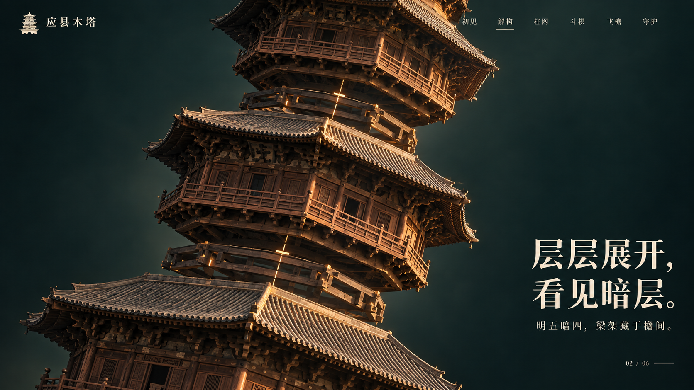
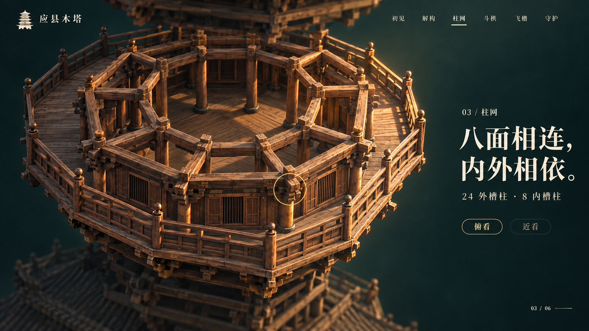
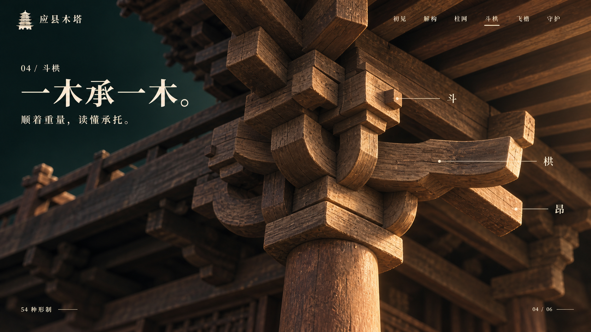
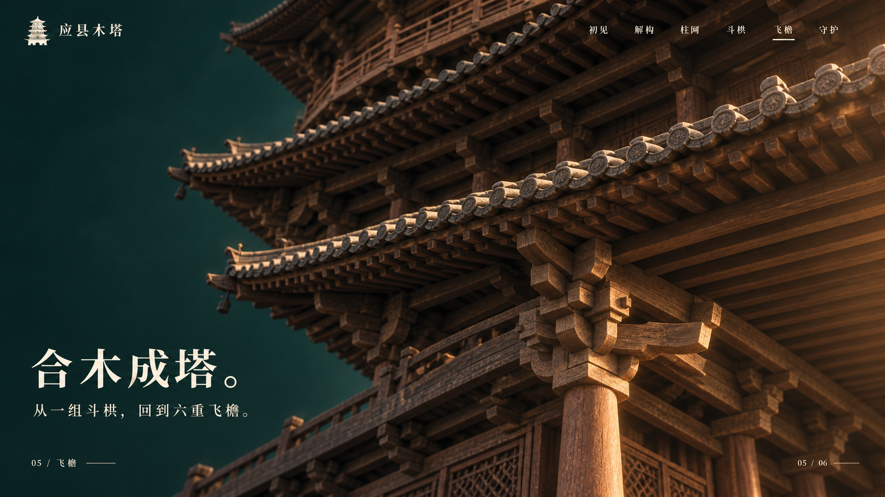
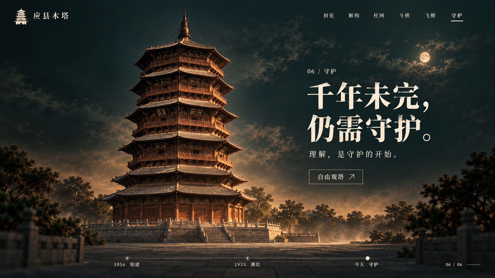

整塔 → 斜向拆层 → 单层柱网 → 斗栱特写 → 归位飞檐 → 完整全景
完整木塔居中，建立形制与尺度。第一张沿用前版，后续网页统一导航名称。
镜头抬高并缓慢侧倾；沿塔轴分开楼层，只让中间三层进入画面。虚线明确表达这是展示性拆解。

锁定第二幕中间的一层；上下层退出视野，屋面抬出画面，镜头俯向两圈柱网。

以前一幕圈出的柱头为固定目标，连续推近；让斗、栱、昂成为主角。

保持同一柱头方位，屋面与楼层先归位，再沿檐口向后滑行；近景变成两三重檐影。

沿同一方向继续退远，完整木塔与台基进入画面，环境缓缓出现，收束到守护主题。
